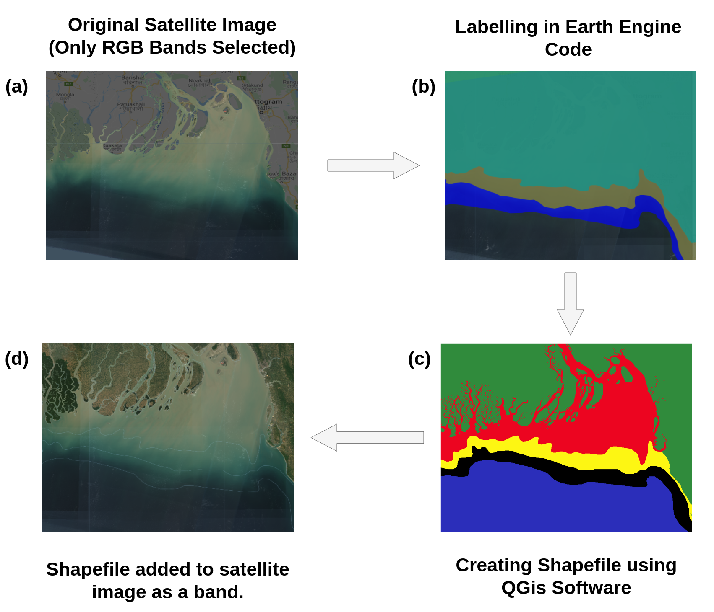
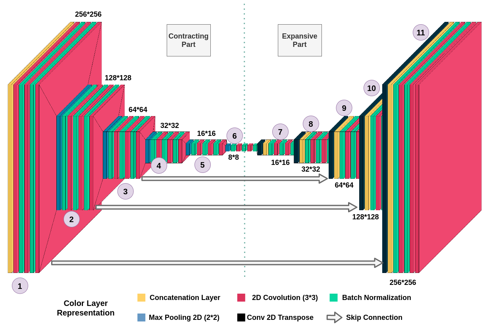
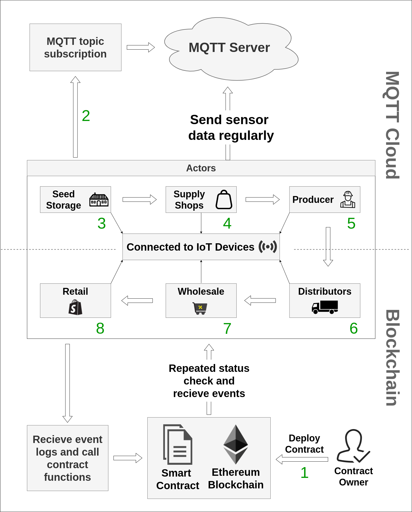
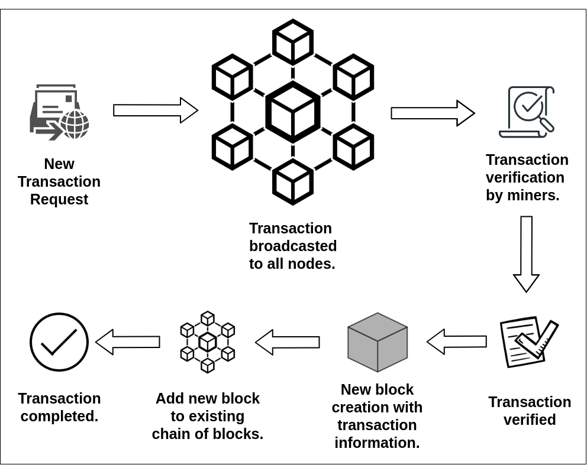

Selected Publication
Patch-Wise Semantic Segmentation of Sedimentation from High-Resolution Satellite Images
Tahmid Hasan Pranto, Abdulla All Noman, Asaduzzaman Noor, Ummey Habiba Deepty, Rashedur M. Rahman
Advances in Computational Intelligence
Springer
August, 2021 | Book Chapter


Blockchain and smart contract for IoT enabled smart agriculture
Tahmid Hasan Pranto, Abdulla All Noman, Atik Mahmud, AKM Bahalul Haque
PeerJ Computer Science
PeerJ
March, 2021 | Research Article

